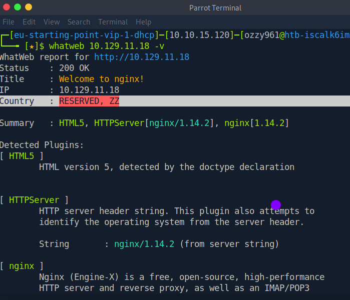
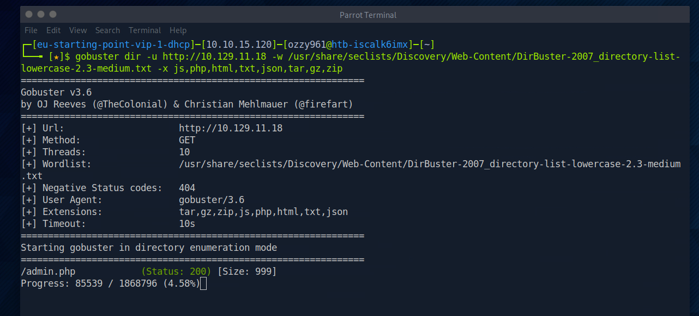
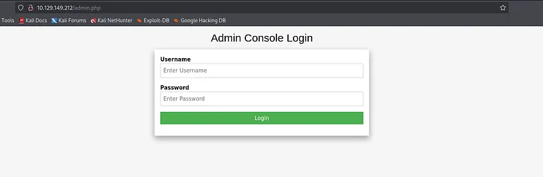
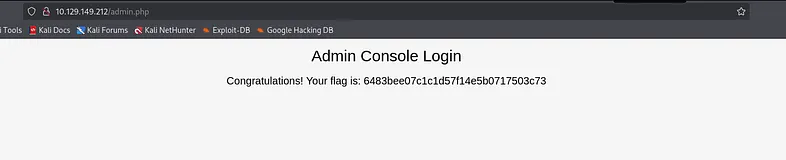

Identifying the exposed web service
I started with an Nmap scan using service detection, the default NSE scripts, and increased verbosity to get an initial view of the target's exposed attack surface.
nmap -sV -sC -vv <TARGET_IP>The scan identified a single open port: TCP/80. The service was identified as HTTP running nginx 1.14.2.
PORT STATE SERVICE REASON VERSION
80/tcp open http syn-ack nginx 1.14.2
|_http-title: Welcome to nginx!
| http-methods:
|_ Supported Methods: GET HEAD
|_http-server-header: nginx/1.14.2TCP port 80 was exposed and identified as an HTTP service running nginx 1.14.2.
The server was returning the default nginx welcome page, so the visible website did not immediately expose an obvious application entry point. I therefore moved to web fingerprinting and content discovery.
Fingerprinting the web application
With HTTP identified as the main attack surface, I performed a quick technology fingerprinting pass with WhatWeb. The goal was to gather additional information about the technologies exposed by the target before starting content discovery.

WhatWeb fingerprinting the exposed web service.
The fingerprinting results reinforced that the target was primarily presenting a web server, so the next logical step was to enumerate files and directories that were not visible from the default page.
Discovering hidden web resources
The default nginx page did not provide an obvious application entry point, so I moved to directory and file enumeration.
I used a SecLists wordlist designed for discovering common web content:
/usr/share/seclists/Discovery/Web-Content/DirBuster-2007_directory-list-lowercase-2.3-medium.txtI then used Gobuster in directory enumeration mode, testing common file extensions such as PHP, HTML, and TXT.
gobuster dir -u http://<TARGET_IP>/ -w /usr/share/seclists/Discovery/Web-Content/DirBuster-2007_directory-list-lowercase-2.3-medium.txt -x php,html,txt
Gobuster discovering the administrative endpoint.
Directory enumeration revealed an admin.php endpoint that was not exposed by the default nginx page.
This gave me a concrete application entry point to investigate next. Rather than continuing to enumerate blindly, I moved directly to the newly discovered administrative page.
Accessing the administrative page
At this point, I could see that the website was still displaying the default nginx page. Since Gobuster had revealed an admin.php endpoint, I decided to access it directly and investigate what was behind the discovered page.
http://<TARGET_IP>/admin.php
The discovered administrative login page.
The endpoint presented a login page that appeared to still use default credentials. Since default credentials are a common source of insecure authentication, I tested the admin:admin combination.
The administrative interface accepted the default credentials: admin:admin.
The successful authentication meant that no authentication bypass or password cracking was necessary. The issue was simply that the default administrative credentials had never been changed.
Retrieving the flag
After authenticating successfully, I gained access to the administrative page and was able to retrieve the flag required to complete the machine.

Successful authentication leading to the flag.
The machine was completed through a simple attack chain: web enumeration → hidden admin page → default credentials → authenticated access → flag retrieval.
Breaking down the assessment
Preignition was a straightforward example of how enumeration can expose an otherwise hidden application entry point. The initial Nmap scan showed only a web service, so the assessment naturally moved toward web-specific discovery.
The default nginx page itself was not the target. Instead, directory enumeration exposed admin.php, which introduced an authentication surface that could be tested.
The final weakness was the use of unchanged default credentials. Once those credentials were accepted, access to the administrative interface was immediate and the machine could be completed without requiring a more complex exploit.
Nmap → HTTP / nginx → WhatWeb → Gobuster → admin.php → admin:admin → Flag
Securing the application
The weaknesses demonstrated by Preignition are simple to mitigate but can have serious consequences when present on real systems.
- Replace all default usernames and passwords before deploying an application.
- Remove or restrict administrative endpoints that do not need to be publicly reachable.
- Require strong, unique credentials for privileged accounts.
- Monitor exposed web directories and administrative interfaces for unexpected access.
- Minimize unnecessary information exposed by default server configurations.
Lessons from Preignition
Preignition reinforced the importance of treating a web server as an application attack surface instead of stopping at the default homepage.
The initial scan only revealed a single HTTP service, but targeted web enumeration uncovered an administrative endpoint that was not visible from the main page.
The machine also demonstrated how dangerous default credentials can be. Once the hidden login page was discovered, testing a common default credential pair was enough to obtain administrative access and retrieve the flag.
Tools used
The main tools and techniques used during the exercise were:
- Nmap — port and service enumeration.
- WhatWeb — web technology fingerprinting.
- Gobuster — directory and file discovery.
- Browser — manual inspection of the discovered administrative endpoint.
Related resources
The resources below cover the Preignition machine and the web enumeration, fingerprinting, directory discovery and authentication concepts demonstrated throughout the lab.